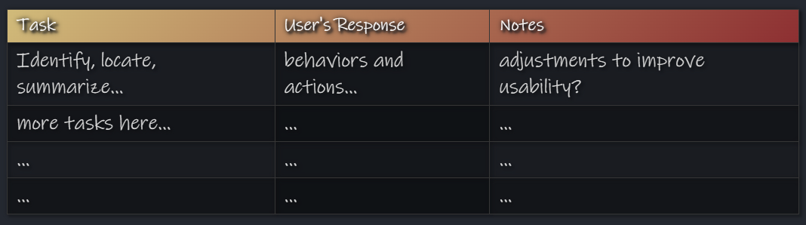

Research... 🤔
I conducted user interviews to answer the following question: What are people looking for when planning to attend the Apple Harvest Festival? or in other words, what are their goals?
The results revealed the following user goals:
- learn how to have an enjoyable out-of-the-house experience
- find the best place to park at the event
- discover the local food
Planning... ✍️
The Layout
The Theme
- happy, bright color scheme - red emphasis (apple theme!)
- images from the event (leisurely, lively environment)
- sharp boxes on information pages (important!)
Prototyping... 📑
Wide Layout ➡️
The prototype began with only a wide layout of the website. This was important, as to ensure the proper content was placed in the website to meet the user's goals.
Reactivity
I then used media queries to add reactivity for the website to look nice on narrow screens. Much of the content that was initially in flex rows became flex columns (content was stacked).
Testing... 🧑💻
Usability Tests
I gave tasks for a user to complete and observed their behavior. Results revealed a few parts that needed to be adjusted. Notes of testing adhered to the following format:
Reflect and Revise
Usability testing revealed that some of the maps were hard to read. So, I added the ability to open the map on a larger screen in a new window.
With a few other fixes, I delivered the website to my client, took their feedback, revised once again, and resulted in the final version.